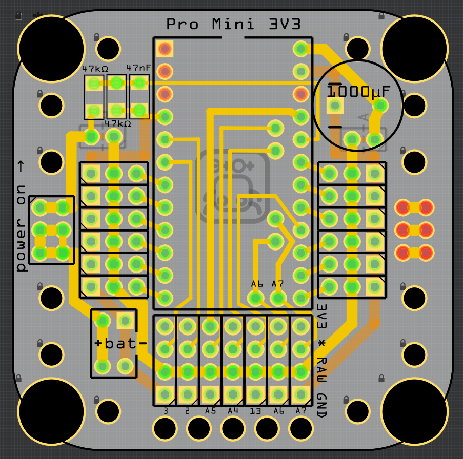
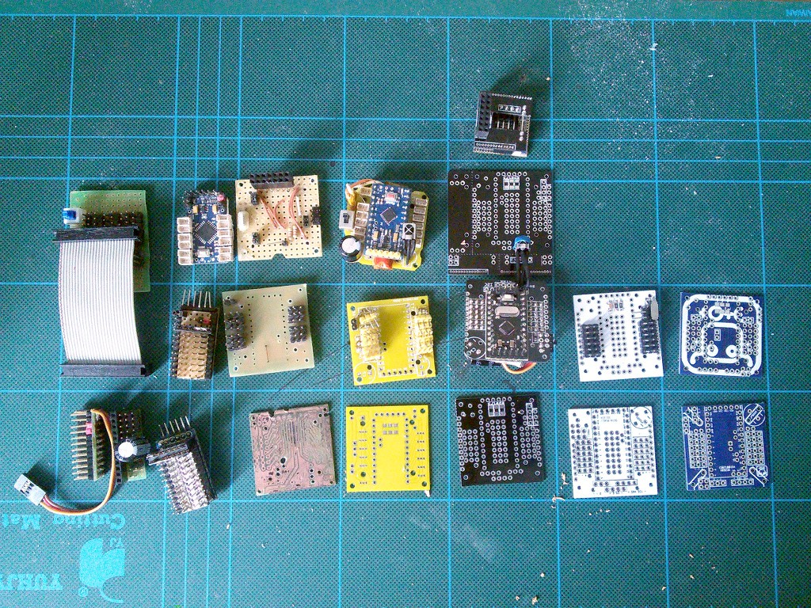

New New Printed Circuit Board¶
Published on 2015-08-01 in Tote.
You know how it is. As soon as you get your hands on the new PCB and assemble another prototype to test it, you get a million ideas for improvements to it. That’s what happened when I got the version 3 of the Tote’s body, and it lead to a complete overhaul in version 4.
The most obvious change is the size. So far all the Tote’s PCB were 38×38mm, simply because that size works well. But the servo horns stick out of the PCB quite far, so the robot is in fact bigger than that. Why not reclaim that space to have more room for all the components? Version 4 of the PCB is now 49×49mm, taking advantage of the maximum size of the board I can order cheaply. The spacing of legs is exactly the same, and there are holes there for the servo horns. That not only makes the whole construction a little bit more rigid, but also lets me attach the servo horns in parallel, instead of diagonally, reclaiming some of the precious space on the board, and making possible a host of other small improvements.
All components are now on a single side of the board, and the only traces that are on the bottom layer are ground. That means, that the whole bottom layer of the board is practically one huge ground fill. The switch and the battery plug are now located in easily accessible places. All the free pins are broken out in one large matrix, which also has easy access to ground, battery power and stabilized power, so that you can connect any sensors in there easily. I dropped the dedicated spot for an IR sensor, you just connect it on pin 2 as you would with any other sensor. That means that you will need to cross the sensor’s legs again, unfortunately, though.
There is also a number of holes in the board for making it easier to add another board or to mount the sensors.
I’m still waiting for the board to arrive from the factory, I hope it will make it before the Hackaday Prize deadline. As soon as it arrives, I will make another prototype (I think I will have to disassemble one of the older ones for the servos).
By the way, don’t be fooled by a relatively low version number of this board! Before I started numbering them, there were lots of prototypes. I made a photo of most of the old boards that at some point were used in this robot:
That of course doesn’t include the boards that are still sitting inside their robots.